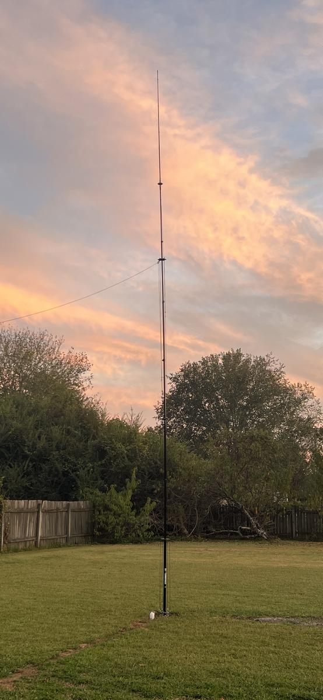

Licensed since 2025
HUNTSVILLE, ALABAMA · EM64SS
About me
Hi! I'm Cindy. I'm still learning but really enjoying this hobby. I got interested in Ham Radio after discovering it through my now fiancé. I think it’s amazing being able to talk to people across the world from the comfort of home.
I am primarily active on the HF bands. I like making contacts on FT8 and Voice, finding new DX countries to work, hunting POTA stations, special events, and contests. I enjoy going to Hamfests and I'm interested in joining YL clubs and activities.
I QSL via QRZ and LoTW. Contacts upload automatically to both every two hours.
I share the station with my fiancé, Brandon, WB4CS.
I am fluent in Spanish, so, ¡Puedes hablarme en español!
73s!
The station
Shack & Antenna

The "corner shack" — set up in the corner of our dining and kitchen area. If you want a better view, click on the photo and it will open the full image in a new tab.
Top monitor: OpenHamClock Dashboard. Bottom left monitor: Shack PC displaying Wavelog. Bottom right monitor: FTDX-10 Screen.
